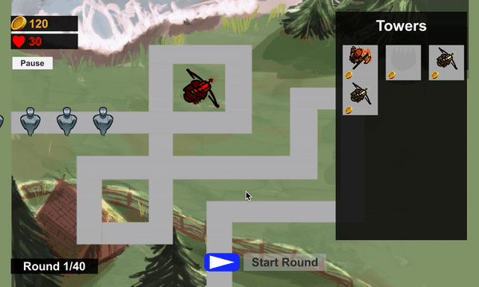

AR.js
AR Web Experimentals and Possibilities
There are lots of projects and frameworks developed for augmented reality realization. While some of them provide stable tracking features and tools such as object recognition, face recognition, and basic occlusion, most of these features have high requirements for the environment (lighting, geometry, camera movement, etc.). I found AR.js to be one of the most mentioned and experimented free web AR interfaces. It is built upon aframe and three.js, which are mature and highly recognized APIs for generating three dimensional geometries and animations on web pages. Aframe is also natively used for virtual reality development.
AR.js’s basic logistics was built on the VR setup of aframe. With the help of the access to the device’s sensors, augmented reality features can be easily realized, and object rendering is solely based upon the underlying three.js interface. It is free and easy to use. It is extremely simple to recreate fundamental AR functionalities. However, as a result of its simplicity and free of charge (I mean it’s already good enough! What else can you ask for? It’s free!)AR.js is definitely not the best option when it comes to nature feature detection(NFT) based image tracking and location based AR. Image tracking doesn’t work all the time. I tried to choose some great images with a high complexity yet they still don't function efficiently enough for the model to have a stable visibility. The location based AR is based upon geolocation, and the example asks you to directly type in your latitude and longitude to see the 3d model right next to you. One of the biggest disadvantages of location based is that it requires a high precision on the device’s location service, which would not be satisfied especially when you’re testing and working inside a shelter. It takes great effort both physically and mentally for you to be determined to work outside in the sun, holding your laptop and sitting on the grass, testing out this very specific feature. You could suffer from dehydration and exhaustion and the potential of being fired by your boss long before you can figure out how this location based system works. So screw it. Testing outside once in a while is also not an option since it doesn’t fit my workflow and I just hate people telling me to go outside. I tried following this tutorial and using geolocation in javascript to get the user’s live longitude and latitude and spawn a magnemite right in front of the user. But it doesn’t work and I can’t find my cute floating magnemite. I am very disappointed. Period.
On the other hand, the marker based system is working just fine. Being the biggest selling point of AR.js, it is satisfying to use. The marker itself is fairly easy to create--you just add your desired picture into the instantiater provided on the website, and it will give you the resulting marker. The models on these markers are stable compared to the nft image, and tracking multiple markers would not affect the precision of marker detection as well. There are even systems of multi-markers to increase the model stability(read-this). This marker system also supports barcode and QR code; it has a great potential to be utilized to add more interaction to products and services.
In the samples that I created, three are all based on AR.js markers. The first example is a recreation of the minimal example that demonstrates the basic functionality of rendering an animated cube on top of the marker.
The second example shows the possibility of combining ar scene with basic html widgets. The user can write notes in the text area and the content will be stored in the user’s local browser storage and will be shown on the note on the marker. To see the note, you need to click on the marker first. The canvas showing the camera view may not be able to be scaled even if you added the “embedded” tag on
AR.js, just like all other web based AR interfaces, has drawbacks that are yet to be overcome. Latency and bandwidth are hard problems to be tackled in the future, when the overall technological support of the internet has been improved. As of now, pure front end AR cannot handle frequent file accessing and large numbers of object rendering. Augmented reality, mixed reality, and virtual reality have always been hot topics in the research and development worlds, but remarkable progress is yet to be made. Hopefully this will change in the next five to ten years; or maybe the evolution of human technology would branch to a completely different direction--neurolinks and chip implantation.
Wolverine Soft Blog #1
BiWeeklyDevBlog #1
In the first two weeks of Project Tower, I did work that fulfilled my credit hours(18 hours total) and even more to help build a solid start for the project.
1. Setup the website (2 Hours)

The website that I use was already there as my portfolio website. However, it was really rough and included some useless aesthetics that took up a lot of memory (mostly animations). I got rid of those, and refined the menu for my website. I still don't have it fully complete; I will be refining it further in the coming weeks.
2. Play Bloons TD 6 (5 Hours)
Before the project officially begins, I played a lot of TD 6 in my own time. I've played the game in my childhood but have never been able to analyze it in detail while I play. While I play through the game, I made sure that I have these things in mind: How does the game feel in general? What elements or mechanics make it fun to play? What are some things that could be altered or improved? I realized that the mechanic that I found to be most interesting is how setting up defense strategy with different combinations of towers could lead to entirely different playstyle, and how you could try entirely different things in a single level. Just like how you could pick different heroes to play in order to experience different game styles in MOBA games. The upgrades of towers furthered this idea of variety. However, the game manages to keep things balanced by introducing different enemy types that could only be handled in some specific ways (invisibility, magic immunity, etc.). This ensures that a variety of different towers are needed to pass the level.
3. Pause Menu (2 Hours)

The first task I did for the studio is the pause menu. In this task, I created an interface that can be called up during gameplays to pause the game. The menu included four buttons: Resume resumes the game; Restart restarts the entire level; MainMenu quits the current level and goes back to the main menu; and Quit quit the entire game. When I was testing the pause menu, I realized that if the timeScale for the game is changed, returning back from the pause menu would not reflect that change. This is due to the hard coded timeScale = 1 in the method ResumeGame(). I fixed that issue by adding a private variable to the class to keep track of the current timeScale.
4. Tower Range (2 Hours)
In this task, I made a range view for towers when dragging them to better illustrate the aggro region for each tower.

As you can see, the green region automatically reflects the range of the specific tower. It will grab the range variable from each tower’s scriptable object and update the circle’s radius. However, this range view is currently only visible when you drag the tower to place it. Further implementation is needed if we want to view each tower’s range in game while directly clicking on them.
5. Immunity system and Magic Attacks (7 Hours)
These two tasks are somewhat related, since they both use the immunity system. I first constructed the underlying logic for immunity and visibility. I figured that these features can be placed on the Health component since they are dealing with damage and health. I added a general immunity toggle and a visibility toggle first, then I changed the general immunity into two separate toggles for magical and physical damage.


To achieve invisibility, I added a layer called invisibleEnemy, and if the invisible toggle is on, its layer will be changed to this one which cannot be detected by towers unless we add this layer to the target layer setting for the tower.
I then added an enum called DamageType which currently consists of Magical and Physical, that reflects the different types of damage dealt. I added a damage type variable to the Tower SO, and when a tower shoots out bullets, the bullet will deal exactly the type of damage of that tower.

I was considering a different option of using damageLayer instead of a new enum, since I saw there was this variable and think that it will be cleaner for me to just use this variable. But after talking with Nikhil, I have decided to use a new enum instead just so that damageType can be separated from all the layer stuff and be in its own pack. This way, further managing it will be less error prone, and clearer for the designers.
6. Explosive Tower (2 Hours)
The last task I did for the past 2 weeks is the explosive tower. For the temporary model, I just copied the original tower model and added a shade of red to it. The tower itself does not need too much alter, but the bullet needs to be altered into an AoE damage bullet. I made a green star as my bomb bullet; I then implemented a new component called ExplosiveDamage which derives from the DamageOnTrigger2D script. This component uses overlapSphere to check for targets within a certain range once it hits its initial target. It then deals damage to all of them within a for loop. This method is overridden from the original DoDamage method, so that triggers are handled in the base class. The range of the explosion can be accessed through the inspector of ExplosiveDamage which is on the explosive bullet itself. Dragging this new bullet to a tower lets the tower shoot out such a bullet.
Wolverine Soft Blog #2
BiWeeklyDevBlog #2
1. Magical Tower (3 Hours)


I created a magic tower that shoots out bullets that deal magical damage. And to illustrate the difference, I also created a temporary magic enemy (purple enemy) who is immune to physical damage. When I was testing out my implementation, I also noticed this bug that once you place down a tower then sell it immediately, you can no longer place down any other towers. The dragged out sprite looks red which is an indication that the tower cannot be placed on the current tile. Therefore I think this may be caused by some sort of collider issue.
Furthermore, I was rethinking my implementation for magical damage when I implemented the magical tower. I chose to implement the magical damage as an enum (instead of using damage layers) since it is easier to manage and will not be confused with other game settings.
2. Prevent Towers from Being Placed Out of Screen (3 hours)

In this task I fixed the bug of tower placement. I changed the TowerDragger object to achieve this goal. Before the mousePosition variable was assigned, I added a constraint check to see if the current mouse position is out of the screen. If so, mousePosition will only remain at the maximum value which is determined by the screen width and height. This ensures that the tower will never go out of screen, which in turn ensures that towers will never be placed out of screen.
At first I was trying to do this with just the screen width and height, but soon I realized that these two values are not reflecting the true width and height of the game window accurately. Following what was done in the other part of the script, I realized that I did not take the scale factor of the canvas into account. Unity game windows can be dragged and stretched, and this results in a different canvas scale factor. After I divided the screen width and height to canvas scale factor x and y, the issue was fixed.
3. Tower Scaling (0.5 hour)
This is a simple task to fix the scale of the tower dropper image and the real placed down tower size. I tried out different values and found that a scale of 2 for the tower dropper image is exactly the same size as the real tower. However, some towers have a stretch factor on the x or y axis, but I think this will be fixed on the art side.
4. Tower Range Color Change (1 hours)
In this task, I managed to change the color of the tower range indicator while placing the tower to better reflect the state of the tower. If the tower cannot be placed on the current grid, the range will appear red, and if it can be placed down, the range will appear green. These two colors can also be adjusted using the inspector. To implement this feature, I added an if check in the tower dropper script. Since there is already a similar feature of tower changing color, all I needed to do is change the tower range color accordingly.
5. Referencing Bloons TD 6 (3 Hours)
For a lot of tasks this week, I am not certain about how the feature should be presented. Specifically, I am curious how Bloons handles tower drag and drop, multi-hit projectiles, and magical attacks.
After playing through some levels by myself in the last few weeks, I am now familiar with the overall game flow and how to strategically plan ahead my tower arrangement. However, this time I paid close attention to find answers for the questions above. For the drag and drop part, I found that Bloons has both the “click and place” and the “drag and drop” options available to the player. I mimicked this in our game to also have the two options. Furthermore, I realized that the multi-hit projectiles are usually being used in tower upgrades, and some towers have default higher hit numbers. If projectiles with a high number of hits are shot, and the hit limit is not reached, projectiles will fly off the screen and disappear. I then applied this to our game by implementing a hit point variable that keeps track of the remaining hits a projectile can have. If the projectile flies too far away, it will also destroy itself. Types of attacks in Bloons are crucial since different balloons receive different attacks. The most obvious one is the purple balloon which is immune to magic attacks. Furthermore, a tower can shoot out both magical and physical attacks (e.g. druid) but it depends on the current upgrade. Therefore, I think it is better to manage tower attack types on towers instead of on projectiles themselves. Upgrades can then easily modify the attack type of the tower without accessing projectile components.
I then added an enum called DamageType which currently consists of Magical and Physical, that reflects the different types of damage dealt. I added a damage type variable to the Tower SO, and when a tower shoots out bullets, the bullet will deal exactly the type of damage of that tower.
6. Hide Tower Menu (2 Hour)

TIn this task, I implemented a button on the tower menu which hides the menu to the side when pressed. Press it again and the tower menu will be shown. To achieve this effect, I added methods in the UI Manager script. The MoveTowerMenu() method is called in Update() to move the menu. By adding a bool to keep track of the current state of the menu (hidden or not), I was able to generalize the ShowMenu() method and the HideMenu() method into one single method. I also made sure to divide screen width with canvas scale factor so that the movement will also take that into account.
7. Ability to Drag and Drop Tower (2 Hour)
This is one of the harder tasks for these two weeks. In this task, I made sure to keep the original click and place function still valid, and add drag and drop on top of it. I first thought about doing a whole new script to add detections for mouseDown and mouseUp, but then I realized it is kind of unnecessary, since most of the functionalities are still the same--you are still grabbing a tower and you are still trying to place it down somewhere. Therefore I reused the methods in the previous component, and after I read through the code, I found the right place to add my functionality in. In the TowerListSlot script, I added a OnTowerPointerDown() method and changed the condition for placement from wasPressed to wasRelease. This way the drag functionality can be easily implemented.
8. Escape Button for Pause Menu (1 Hour)
This task ensures that pressing the escape button can call out the pause menu. In this task, I created a new component called KeyInputManager. This component is a singleton which handles all the keyboard inputs received from the user. Since the pause menu is automatically called out when the game is paused, I simply let the game pause whenever a key input of the escape button is received.
9. Multi-Hit Projectile (2 Hour)
The very last task on the list is to create a multi hit projectile--a projectile that can penetrate more than 1 enemy target before being destroyed. In order to achieve this, I created a new component called ProjectileHealth. By replacing the DestroyOnTrigger2D, the projectile will not immediately destroy itself when it hits something, instead, it will decrease its own health by 1 each time it hits. If the health is down to 0, it will then destroy itself. I kept most of the OnTriggerEnter2D method the same as the DestroyOnTrigger2D component, but I added two different conditions: hitTarget and hitObstacle to the script, since hitting an obstacle will destroy the projectile immediately, but hitting a target will not. I also added two different public layerMask variables (obstacle and target layers) for designers to tweek and adjust.
| Bloons | Tower Placement | Tower Scaling | Magic Tower | Tower Range Color | Hide Tower Menu | Drag and Drop | Escape Button | Multi-Hit Projectile | Studio Meetings | Total: |
| 3h | 3h | 0.5h | 3h | 1h | 2h | 2h | 1h | 2h | 2h | 19.5h |